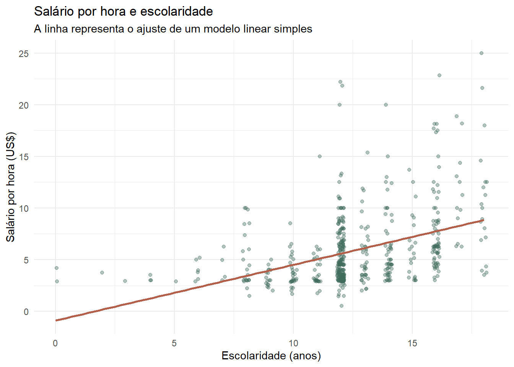
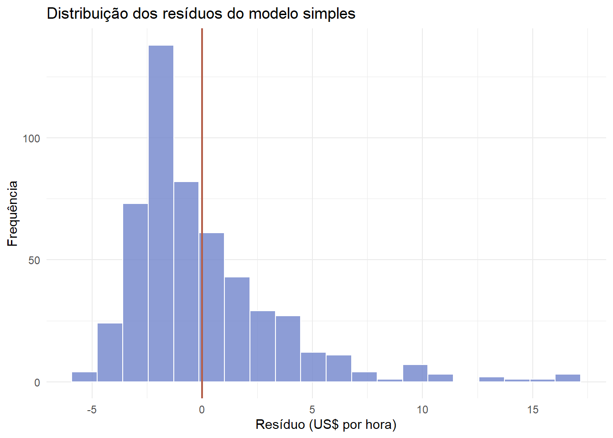
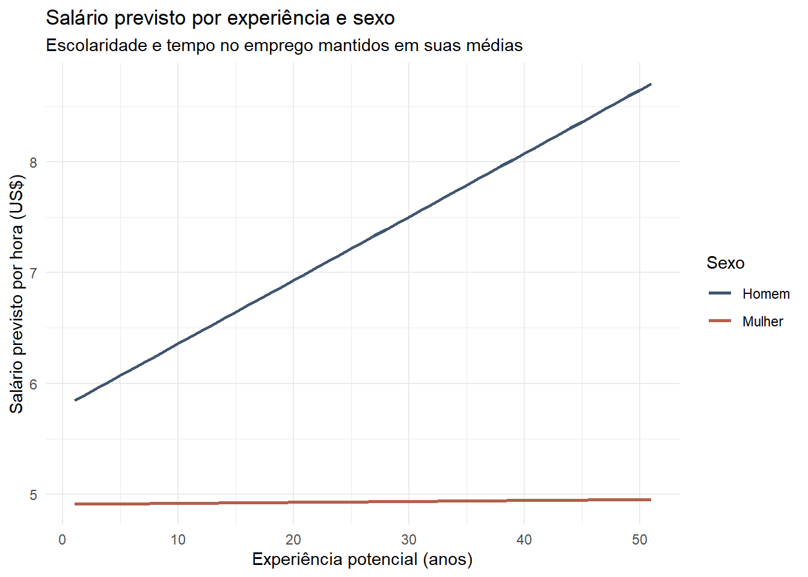
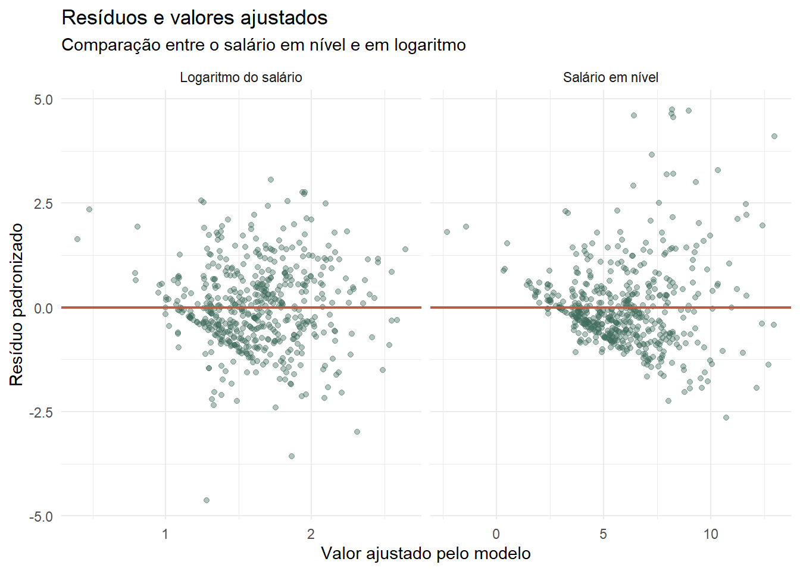

Nos capítulos anteriores, descrevemos distribuições e identificamos associações entre variáveis. Agora avançaremos uma etapa: utilizaremos modelos lineares para representar essas relações e comparar indivíduos com características observáveis diferentes.
Nossa pergunta orientadora será:
Como escolaridade, experiência, tempo no emprego e sexo estão associados ao salário por hora?
O material parte da lógica desenvolvida por Wooldridge para dados de corte transversal. Nosso objetivo, porém, não é realizar um curso completo de econometria. A ênfase estará em implementar, interpretar e comunicar uma análise econômica utilizando R.
NotaObjetivos do capítulo
Ao final deste capítulo, você deverá ser capaz de:
formular uma regressão linear simples;
estimar um modelo com lm();
interpretar intercepto, inclinação, valores ajustados e resíduos;
compreender o papel do erro e do \(R^2\);
ampliar o modelo com outras variáveis explicativas;
trabalhar com variáveis binárias, interações e termos quadráticos;
interpretar modelos com o salário em logaritmo;
reconhecer que uma regressão, isoladamente, não estabelece causalidade.
21.1 Preparando a base
Continuaremos utilizando a base reduzida derivada de wage1, do pacote wooldridge. Ela contém 526 pessoas e seis variáveis.
female: variável binária, igual a 1 para mulheres e 0 para homens;
sexo: versão categórica de female, criada para facilitar tabelas e gráficos.
DicaPor que continuar com a mesma base?
Já conhecemos a estrutura e as principais distribuições de wage1_core. Assim, podemos concentrar a atenção na nova ferramenta, sem interromper o raciocínio para aprender outra base.
21.2 Do gráfico ao modelo
No capítulo anterior, observamos uma associação positiva entre escolaridade e salário. Vamos retomar esse gráfico e acrescentar uma reta linear:
ggplot(wage1_modelos, aes(x = educ, y = wage)) +geom_jitter(width =0.15,height =0,alpha =0.4,color ="#3F6B5B" ) +geom_smooth(method ="lm",formula = y ~ x,se =FALSE,color ="#B45F4A",linewidth =1 ) +labs(title ="Salário por hora e escolaridade",subtitle ="A linha representa o ajuste de um modelo linear simples",x ="Escolaridade (anos)",y ="Salário por hora (US$)" ) +theme_minimal()

A nuvem de pontos mostra que pessoas com a mesma escolaridade podem receber salários diferentes. A reta não pretende passar por todos os pontos: ela resume como o salário médio varia com a escolaridade na amostra.
21.3 Regressão linear simples
Começamos com o modelo populacional:
\[
wage_i = \beta_0 + \beta_1 educ_i + u_i
\]
O subscrito \(i\) identifica cada pessoa. Nesse modelo:
\(wage_i\) é a variável dependente ou explicada;
\(educ_i\) é a variável explicativa;
\(\beta_0\) é o intercepto;
\(\beta_1\) representa a variação média no salário associada a um ano adicional de escolaridade;
\(u_i\) é o termo de erro.
O erro reúne fatores que afetam o salário, mas não estão explicitamente representados pelo modelo: habilidade, ocupação, setor, região, condições familiares, entre outros.
AvisoAssociação não é causalidade
O coeficiente de escolaridade informa uma associação média. Para interpretá-lo como efeito causal, precisaríamos justificar por que outros fatores presentes em \(u_i\) não estão relacionados à escolaridade. Estimar uma regressão não resolve automaticamente esse problema.
21.3.1 A função de regressão populacional
Quando o modelo inclui um intercepto, podemos definir o erro de modo que sua média populacional seja zero:
\[
E(u)=0.
\]
Isso, porém, não garante que o erro tenha média zero para pessoas com diferentes níveis de escolaridade. Para interpretar a reta como a média condicional do salário, precisamos de uma condição mais forte. Se a média do erro, condicionada à escolaridade, for zero,
\[
E(u \mid educ) = 0,
\]
então:
\[
E(wage \mid educ) = \beta_0 + \beta_1 educ.
\]
Essa expressão é a função de regressão populacional. Ela relaciona cada nível de escolaridade ao salário médio esperado.
Em termos intuitivos, para cada nível de escolaridade, os fatores não observados que elevam o salário e os que reduzem o salário precisam se compensar, em média. Essa condição é exigente e não pode ser verificada apenas observando o resultado da regressão.
Função de regressão populacional. Fonte: Anderson, Sweeney e Williams, Statistics for Business & Economics.
NotaEntenda mais: parte sistemática e termo de erro
Podemos reescrever o modelo como:
\[
wage_i = E(wage \mid educ_i) + u_i.
\]
Essa escrita separa o salário em duas partes:
\(E(wage \mid educ_i)\) é a parte sistemática representada pelo modelo;
\(u_i\) é a parte não explicada pela escolaridade.
A condição \(E(u \mid educ)=0\) é mais forte do que simplesmente \(E(u)=0\). Ela afirma que, em cada nível de escolaridade, os fatores não observados reunidos em \(u\) possuem média zero. Se habilidade, origem familiar ou outro fator omitido estiver relacionado simultaneamente à escolaridade e ao salário, essa condição pode não ser válida.
21.4 Estimação por mínimos quadrados ordinários
Não conhecemos os parâmetros populacionais \(\beta_0\) e \(\beta_1\). Utilizamos a amostra para obter \(\hat{\beta}_0\) e \(\hat{\beta}_1\):
Somar diretamente os resíduos faria desvios positivos e negativos se anularem. Ao elevar cada resíduo ao quadrado, todos contribuem positivamente para a medida de erro e desvios maiores recebem peso maior.
DicaEntenda mais: calculando a inclinação sem lm()
Podemos reproduzir a fórmula do estimador diretamente no R:
Call:
lm(formula = wage ~ educ, data = wage1_modelos)
Residuals:
Min 1Q Median 3Q Max
-5.3396 -2.1501 -0.9674 1.1921 16.6085
Coefficients:
Estimate Std. Error t value Pr(>|t|)
(Intercept) -0.90485 0.68497 -1.321 0.187
educ 0.54136 0.05325 10.167 <2e-16 ***
---
Signif. codes: 0 '***' 0.001 '**' 0.01 '*' 0.05 '.' 0.1 ' ' 1
Residual standard error: 3.378 on 524 degrees of freedom
Multiple R-squared: 0.1648, Adjusted R-squared: 0.1632
F-statistic: 103.4 on 1 and 524 DF, p-value: < 2.2e-16
21.5.1 Como ler a saída de summary()
O resultado apresentado por summary() está organizado em blocos.
1. Chamada do modelo — Call
Repete a fórmula e a base utilizadas. Essa informação é útil para confirmar se estimamos o modelo pretendido.
2. Resíduos — Residuals
Apresenta cinco medidas da distribuição dos resíduos: mínimo, primeiro quartil, mediana, terceiro quartil e máximo. A mediana próxima de zero é esperada, mas esse resumo não substitui a análise gráfica dos resíduos.
3. Coeficientes — Coefficients
Cada linha corresponde a um parâmetro. As colunas informam:
Estimate: valor estimado do coeficiente;
Std. Error: erro-padrão da estimativa;
t value: razão entre a estimativa e seu erro-padrão;
Pr(>|t|): valor-p do teste bilateral de que o coeficiente é zero.
Podemos solicitar somente essa tabela:
coef(summary(modelo_simples))
Estimate Std. Error t value Pr(>|t|)
(Intercept) -0.9048516 0.68496782 -1.321013 1.870735e-01
educ 0.5413593 0.05324804 10.166746 2.782599e-22
Os símbolos ao lado dos valores-p são códigos de significância utilizados pelo R:
***: valor-p menor que 0,001;
**: valor-p menor que 0,01;
*: valor-p menor que 0,05;
.: valor-p menor que 0,10.
Esses símbolos são apenas uma convenção visual. A interpretação não deve se limitar a contar asteriscos.
4. Erro-padrão residual
Resume o tamanho típico dos resíduos na unidade da variável dependente. Neste modelo, está medido em dólares por hora. O resultado também informa os graus de liberdade usados em seu cálculo.
5. \(R^2\) e \(R^2\) ajustado
Mostram quanto da variação amostral de wage foi representada pelo modelo. A construção dessas medidas será examinada adiante.
6. Estatística \(F\)
Testa se o conjunto de coeficientes das variáveis explicativas é igual a zero. Na regressão simples, esse teste produz a mesma conclusão do teste \(t\) para educ; em modelos com várias explicativas, ele testa os coeficientes conjuntamente.
O coeficiente de educ indica quantos dólares por hora estão associados, em média, a um ano adicional de escolaridade. O intercepto representa o salário previsto para uma pessoa com zero ano de escolaridade. Embora seja necessário para posicionar a reta, essa situação está distante da maior parte da amostra e pode não ter interpretação econômica útil.
ImportanteLeia coeficientes com unidade
Não basta dizer que o coeficiente é positivo ou negativo. Indique sempre:
qual variável está mudando;
qual é a magnitude da mudança;
em qual unidade a variável dependente é medida;
quais condições estão sendo mantidas fixas, quando houver outras variáveis no modelo.
21.6 Valores ajustados e resíduos
Para cada pessoa, o modelo produz um valor ajustado:
resíduo positivo: o salário observado está acima do ajustado;
resíduo negativo: o salário observado está abaixo do ajustado;
resíduo próximo de zero: a reta passa perto daquela observação.
ggplot(wage1_ajustes, aes(x = residuo)) +geom_histogram(bins =20,fill ="#7185CC",color ="white",alpha =0.8 ) +geom_vline(xintercept =0, color ="#B45F4A", linewidth =0.8) +labs(title ="Distribuição dos resíduos do modelo simples",x ="Resíduo (US$ por hora)",y ="Frequência" ) +theme_minimal()

NotaEntenda mais: propriedades algébricas do MQO
Quando o modelo inclui intercepto, os resíduos de MQO possuem algumas propriedades na amostra:
sua soma é zero;
sua média é zero;
sua covariância amostral com a variável explicativa é zero;
a média dos valores ajustados é igual à média observada de \(y\).
Podemos verificar essas propriedades no R:
residuos_simples <-residuals(modelo_simples)ajustados_simples <-fitted(modelo_simples)tibble(propriedade =c("Soma dos resíduos","Média dos resíduos","Covariância entre educação e resíduos","Média dos valores ajustados","Média dos salários observados","Covariância entre ajustados e resíduos" ),valor =c(sum(residuos_simples),mean(residuos_simples),cov(wage1_modelos$educ, residuos_simples),mean(ajustados_simples),mean(wage1_modelos$wage),cov(ajustados_simples, residuos_simples) ))
# A tibble: 6 × 2
propriedade valor
<chr> <dbl>
1 Soma dos resíduos -1.18e-13
2 Média dos resíduos -2.24e-16
3 Covariância entre educação e resíduos 5.11e-15
4 Média dos valores ajustados 5.90e+ 0
5 Média dos salários observados 5.90e+ 0
6 Covariância entre ajustados e resíduos -1.11e-15
Valores muito pequenos, como \(10^{-15}\), representam zero dentro da precisão numérica do computador.
21.7 Qualidade do ajuste
Depois de estimar uma regressão, precisamos avaliar quanto da variação observada no salário foi representada pela reta e quanto permaneceu nos resíduos. Para isso, começamos comparando três valores para cada pessoa:
o salário observado, \(wage_i\);
a média salarial da amostra, \(\overline{wage}\);
o salário ajustado pelo modelo, \(\widehat{wage}_i\).
Esses valores permitem decompor a variação do salário em duas partes.
flowchart LR
A["Variação total<br/>SQT"] --> B["Variação representada<br/>pelo modelo — SQE"]
A --> C["Variação que permanece<br/>nos resíduos — SQR"]
classDef etapa fill:#DCEBDC,stroke:#355E3B,color:#1F3323,stroke-width:1.5px;
class A,B,C etapa;
linkStyle default stroke:#355E3B,stroke-width:1.5px;
NotaCódigo Mermaid do fluxograma
flowchart LR
A["Variação total — SQT"] --> B["Variação representada pelo modelo — SQE"]
A --> C["Variação que permanece nos resíduos — SQR"]
classDef etapa fill:#DCEBDC,stroke:#355E3B,color:#1F3323,stroke-width:1.5px;
class A,B,C etapa;
linkStyle default stroke:#355E3B,stroke-width:1.5px;
21.7.1 Soma dos Quadrados Totais — SQT
A Soma dos Quadrados Totais (SQT) mede a variação total dos salários em torno da média:
Para cada pessoa, calculamos a distância entre o salário observado e a média. Elevamos essa distância ao quadrado e somamos os resultados. Quanto mais diferentes forem os salários, maior será a SQT.
Se a escolaridade não produzisse nenhuma diferença nos valores ajustados, todos eles ficariam próximos da média e a SQE seria pequena. Quanto mais a reta conseguir representar diferenças sistemáticas nos salários, maior será a SQE.
O nome “explicada” deve ser interpretado com cuidado: significa representada estatisticamente pelo modelo, e não necessariamente explicada em sentido causal.
21.7.3 Soma dos Quadrados dos Resíduos — SQR
A Soma dos Quadrados dos Resíduos (SQR) mede a variação que permaneceu entre os salários observados e os valores ajustados:
Quanto mais distantes os pontos estiverem da reta de regressão, maior será a SQR. Por isso, ela representa a parte da variação salarial que o modelo não conseguiu reproduzir.
sqr <-sum(residuals(modelo_simples)^2)sqr
[1] 5980.682
O MQO escolheu justamente os coeficientes que tornam essa SQR a menor possível entre todas as retas que poderiam ser traçadas para a amostra.
21.7.4 Decompondo a variação total
Em uma regressão estimada por MQO com intercepto, vale a identidade:
\[
SQT=SQE+SQR.
\]
Isto é:
\[
\text{variação total}
=\text{variação representada pelo modelo}
+\text{variação que permaneceu nos resíduos}.
\]
Os três resultados são iguais. Por exemplo, um \(R^2\) de 0,20 significaria que 20% da variação amostral dos salários foi representada pela escolaridade no modelo e 80% permaneceu nos resíduos.
Valores próximos de 1 indicam que os valores ajustados acompanham grande parte da variação de wage; valores próximos de 0 indicam que grande parte dessa variação permanece nos resíduos.
O desvio total é a soma do desvio representado pela regressão e do resíduo. Ao elevar os dois lados ao quadrado e somar todas as observações, surge um termo cruzado. Nas regressões de MQO com intercepto, esse termo é zero porque valores ajustados e resíduos são ortogonais. Assim:
Aviso\(R^2\) não mede causalidade nem qualidade econômica
Um \(R^2\) alto não torna uma relação causal. Um \(R^2\) baixo também não invalida automaticamente um modelo. Em dados individuais, salários dependem de muitos fatores e é comum que uma especificação simples deixe grande variação sem explicar.
21.9 Incerteza e teste de hipótese
Os coeficientes foram calculados a partir de uma amostra. Outra amostra produziria valores um pouco diferentes. O erro-padrão procura resumir essa incerteza.
Um valor-p pequeno indica que uma estimativa tão distante de zero seria pouco compatível com \(H_0\), sob as hipóteses do modelo.
Representação de um teste bilateral. Fonte da figura original: Cuemath.
Em um teste bilateral, resultados muito negativos ou muito positivos podem fornecer evidência contra a hipótese nula. A decisão depende do nível de significância definido e não apenas da posição visual da estimativa.
NotaEntenda mais: estatística t e intervalo de confiança
em que \(EP(\hat{\beta}_j)\) é o erro-padrão do estimador. Quanto maior a estimativa em relação ao seu erro-padrão, mais distante de zero estará a estatística \(t\).
Também podemos construir um intervalo de confiança de 95%:
Se o intervalo de 95% não contém zero, o teste bilateral rejeita \(H_0:\beta_j=0\) ao nível de 5%, sob as hipóteses utilizadas para a inferência.
ImportanteO que um valor-p não informa
O valor-p não mede a importância econômica do coeficiente, não fornece a probabilidade de a hipótese nula ser verdadeira e não resolve problemas de especificação ou causalidade. Magnitude, unidade, incerteza e contexto econômico devem ser interpretados conjuntamente.
21.10 Regressão linear múltipla
O salário não depende apenas da escolaridade. Podemos incluir outras características observadas:
Call:
lm(formula = wage ~ educ + exper + tenure, data = wage1_modelos)
Residuals:
Min 1Q Median 3Q Max
-7.6068 -1.7747 -0.6279 1.1969 14.6536
Coefficients:
Estimate Std. Error t value Pr(>|t|)
(Intercept) -2.87273 0.72896 -3.941 9.22e-05 ***
educ 0.59897 0.05128 11.679 < 2e-16 ***
exper 0.02234 0.01206 1.853 0.0645 .
tenure 0.16927 0.02164 7.820 2.93e-14 ***
---
Signif. codes: 0 '***' 0.001 '**' 0.01 '*' 0.05 '.' 0.1 ' ' 1
Residual standard error: 3.084 on 522 degrees of freedom
Multiple R-squared: 0.3064, Adjusted R-squared: 0.3024
F-statistic: 76.87 on 3 and 522 DF, p-value: < 2.2e-16
Agora, \(\hat{\beta}_1\) mede a associação entre um ano adicional de escolaridade e o salário por hora mantendo fixas experiência e permanência no emprego. Essa interpretação, conhecida como ceteris paribus, é a principal contribuição da regressão múltipla.
Da mesma forma:
o coeficiente de exper compara pessoas com escolaridade e permanência no emprego semelhantes;
o coeficiente de tenure compara pessoas com escolaridade e experiência semelhantes.
Adicionar variáveis não torna automaticamente o modelo causal. A interpretação depende de quais fatores foram controlados, de quais permaneceram no erro e de como eles se relacionam com as variáveis incluídas.
NotaEntenda mais: média condicional zero na regressão múltipla
No modelo múltiplo, a condição relevante pode ser escrita como:
\[
E(u\mid educ,exper,tenure)=0.
\]
Ela afirma que, depois de fixar simultaneamente escolaridade, experiência e tempo no emprego, o erro possui média zero. Se um fator omitido estiver relacionado ao salário e também a alguma dessas explicativas, os coeficientes podem incorporar parte dessa relação omitida.
Controlar por mais variáveis pode ajudar, mas não garante que a condição seja satisfeita. A seleção dos controles deve ser orientada pela pergunta econômica e pelo desenho da investigação.
NotaEntenda mais: MQO em notação matricial
Com várias variáveis explicativas, podemos organizar o modelo como:
em que \(\mathbf{y}\) reúne os valores da variável dependente, \(\mathbf{X}\) contém uma coluna de 1 para o intercepto e as variáveis explicativas, e \(\boldsymbol{\beta}\) reúne os parâmetros.
Essa expressão ajuda a compreender o cálculo, mas o aluno não precisa fazer manualmente a álgebra matricial para utilizar lm() e interpretar seus resultados.
flowchart LR
A["Escolaridade"] --> D["Salário por hora"]
B["Experiência"] --> D
C["Tempo no emprego"] --> D
E["Outros fatores<br/>no erro"] -.-> D
classDef etapa fill:#DCEBDC,stroke:#355E3B,color:#1F3323,stroke-width:1.5px;
class A,B,C,D,E etapa;
linkStyle default stroke:#355E3B,stroke-width:1.5px;
NotaCódigo Mermaid do fluxograma
flowchart LR
A["Escolaridade"] --> D["Salário por hora"]
B["Experiência"] --> D
C["Tempo no emprego"] --> D
E["Outros fatores no erro"] -.-> D
classDef etapa fill:#DCEBDC,stroke:#355E3B,color:#1F3323,stroke-width:1.5px;
class A,B,C,D,E etapa;
linkStyle default stroke:#355E3B,stroke-width:1.5px;
O \(R^2\) nunca diminui quando acrescentamos variáveis. O \(R^2\) ajustado introduz uma penalidade pela inclusão de regressores e pode diminuir quando uma variável contribui pouco para o ajuste.
NotaEntenda mais: \(R^2\) ajustado e teste F
O \(R^2\) ajustado considera o tamanho da amostra, \(n\), e o número de variáveis explicativas, \(k\):
\[
\bar{R}^2
=1-\frac{(1-R^2)(n-1)}{n-k-1}.
\]
Ao contrário do \(R^2\), ele pode diminuir quando acrescentamos uma variável que contribui pouco para o modelo.
A estatística \(F\) permite testar conjuntamente:
\[
H_0:\beta_1=\beta_2=\cdots=\beta_k=0.
\]
A alternativa afirma que pelo menos um desses coeficientes é diferente de zero. Podemos recuperar a estatística e seu valor-p da saída do modelo:
Rejeitar \(H_0\) indica evidência de que as variáveis possuem relevância conjunta na especificação. Isso não demonstra causalidade nem garante que o modelo esteja corretamente especificado.
21.11 Variável binária: diferenças entre grupos
Uma variável binária assume os valores 0 e 1. Em wage1_core, female é igual a 1 para mulheres e 0 para homens. Vamos incorporá-la ao modelo:
Call:
lm(formula = wage ~ female + educ + exper + tenure, data = wage1_modelos)
Residuals:
Min 1Q Median 3Q Max
-7.7675 -1.8080 -0.4229 1.0467 14.0075
Coefficients:
Estimate Std. Error t value Pr(>|t|)
(Intercept) -1.56794 0.72455 -2.164 0.0309 *
female -1.81085 0.26483 -6.838 2.26e-11 ***
educ 0.57150 0.04934 11.584 < 2e-16 ***
exper 0.02540 0.01157 2.195 0.0286 *
tenure 0.14101 0.02116 6.663 6.83e-11 ***
---
Signif. codes: 0 '***' 0.001 '**' 0.01 '*' 0.05 '.' 0.1 ' ' 1
Residual standard error: 2.958 on 521 degrees of freedom
Multiple R-squared: 0.3635, Adjusted R-squared: 0.3587
F-statistic: 74.4 on 4 and 521 DF, p-value: < 2.2e-16
Como homens formam o grupo female = 0, o coeficiente de female representa a diferença salarial média das mulheres em relação aos homens, mantendo constantes escolaridade, experiência e permanência no emprego.
Podemos escrever as duas retas implícitas no modelo. Para homens, female = 0:
Assim, \(\hat{\delta}_1\) desloca o intercepto, enquanto as inclinações permanecem iguais para os dois grupos nesta especificação.
AvisoDiferença condicional ainda não é discriminação causal
O modelo controla apenas as variáveis disponíveis. Ocupação, setor, jornada, região e outras características não estão em wage1_core. O coeficiente descreve uma diferença condicional nesta especificação; isoladamente, ele não identifica toda a origem da desigualdade salarial.
21.11.1 Variáveis com mais de duas categorias
Uma variável qualitativa pode possuir várias categorias. Para ilustrar, agruparemos a escolaridade em três faixas:
wage1_categorias <- wage1_modelos |>mutate(faixa_educacao =case_when( educ <12~"Menos de 12 anos", educ ==12~"12 anos", educ >12~"Mais de 12 anos",.default =NA_character_ ),faixa_educacao =factor( faixa_educacao,levels =c("12 anos","Menos de 12 anos","Mais de 12 anos" ) ) )table(wage1_categorias$faixa_educacao)
12 anos Menos de 12 anos Mais de 12 anos
198 116 212
Definimos “12 anos” como categoria de referência. O R criará indicadores para as outras duas categorias e comparará cada uma delas com o grupo de referência:
Estimate Std. Error t value Pr(>|t|)
(Intercept) 5.689473696 0.32940247 17.2721041 3.643221e-53
faixa_educacaoMenos de 12 anos -1.806381445 0.36103520 -5.0033389 7.721578e-07
faixa_educacaoMais de 12 anos 1.607464015 0.31187270 5.1542312 3.623835e-07
female -1.955343809 0.27571574 -7.0918832 4.343346e-12
exper 0.008739303 0.01173770 0.7445495 4.568804e-01
tenure 0.145983561 0.02200689 6.6335377 8.238187e-11
O intercepto se refere ao grupo de referência quando as demais variáveis numéricas são zero. Cada coeficiente de faixa_educacao representa uma diferença em relação às pessoas com 12 anos de escolaridade, mantendo constantes sexo, experiência e tempo no emprego.
NotaEntenda mais: por que uma categoria precisa ser referência?
Se incluíssemos um intercepto e uma variável binária para cada uma das três categorias, a soma das três binárias seria sempre igual a 1, exatamente como a coluna do intercepto. Uma coluna poderia ser obtida a partir das outras, criando colinearidade perfeita.
Por isso, com \(g\) categorias e um intercepto, utilizamos \(g-1\) indicadores. A categoria omitida não desaparece da análise: ela se torna o grupo de comparação incorporado ao intercepto.
21.12 Interações: a associação pode variar entre grupos
Até aqui, o modelo supõe que a associação entre experiência e salário é igual para homens e mulheres. Uma interação permite que essa inclinação seja diferente:
# A tibble: 2 × 2
sexo inclinacao_experiencia
<chr> <dbl>
1 Homem 0.0572
2 Mulher 0.000855
Para visualizar o modelo, produzimos previsões para perfis que mantêm escolaridade e tempo no emprego em seus valores médios:
perfis_experiencia <-expand_grid(exper =seq(min(wage1_modelos$exper),max(wage1_modelos$exper),by =1 ),female =c(0, 1)) |>mutate(educ =mean(wage1_modelos$educ),tenure =mean(wage1_modelos$tenure),sexo =if_else(female ==1, "Mulher", "Homem"),salario_previsto =predict(modelo_interacao, newdata =pick(everything())) )ggplot( perfis_experiencia,aes(x = exper, y = salario_previsto, color = sexo)) +geom_line(linewidth =1) +scale_color_manual(values =c("Homem"="#3F566F", "Mulher"="#B45F4A")) +labs(title ="Salário previsto por experiência e sexo",subtitle ="Escolaridade e tempo no emprego mantidos em suas médias",x ="Experiência potencial (anos)",y ="Salário previsto por hora (US$)",color ="Sexo" ) +theme_minimal()

21.13 Relações não lineares nas variáveis
Um modelo linear nos parâmetros pode conter um termo quadrático. Isso é útil quando um ano adicional de experiência não possui a mesma associação com o salário em toda a trajetória profissional:
Se o coeficiente do termo quadrático for negativo, a associação permanece positiva inicialmente, mas diminui à medida que a experiência aumenta. Isso não significa que todas as pessoas terão exatamente essa trajetória; trata-se do formato médio estimado pelo modelo.
21.14 Unidade de medida
A interpretação de um coeficiente depende da unidade de cada variável. Em wage1_core, wage está em dólares por hora e educ em anos.
Suponha que expressemos o salário em centavos. Como multiplicamos a variável dependente por 100, os coeficientes também serão multiplicados por 100:
A relação substantiva não mudou; apenas alteramos sua unidade de apresentação.
NotaEntenda mais: o que permanece igual quando mudamos a unidade?
Uma transformação linear de unidade altera a escala dos coeficientes, mas não altera o conteúdo estatístico da relação:
se \(y\) é multiplicado por uma constante \(c\), intercepto e inclinações são multiplicados por \(c\);
se \(x\) é multiplicado por \(c\), o coeficiente de \(x\) é dividido por \(c\);
estatísticas \(t\), valores-p e \(R^2\) permanecem iguais.
Podemos confirmar o último ponto:
tibble(modelo =c("dólares e anos", "centavos e anos", "dólares e meses"),r_quadrado =c(summary(modelo_dolares)$r.squared,summary(modelo_centavos)$r.squared,summary(modelo_meses)$r.squared ))
# A tibble: 3 × 2
modelo r_quadrado
<chr> <dbl>
1 dólares e anos 0.165
2 centavos e anos 0.165
3 dólares e meses 0.165
21.15 Formas funcionais e logaritmos
Uma relação pode ser linear nos níveis ou utilizar logaritmos. A escolha deve acompanhar a pergunta econômica e a forma observada nos dados.
Modelo
Variável dependente
Explicativa
Interpretação de \(\beta_1\)
Nível–nível
\(y\)
\(x\)
uma unidade em \(x\) está associada a \(\beta_1\) unidades em \(y\)
Nível–log
\(y\)
\(\log(x)\)
1% em \(x\) está associado a aproximadamente \(\beta_1/100\) unidade em \(y\)
Log–nível
\(\log(y)\)
\(x\)
uma unidade em \(x\) está associada a aproximadamente \(100\beta_1\)% em \(y\)
Log–log
\(\log(y)\)
\(\log(x)\)
1% em \(x\) está associado a \(\beta_1\)% em \(y\)
Antes de aplicar um logaritmo, precisamos verificar se a variável possui apenas valores positivos:
O salário é positivo em toda a amostra, mas existem pessoas com educ = 0. Como \(\log(0)\) não é definido, os modelos que utilizam log(educ) serão estimados apenas para observações com escolaridade positiva:
wage1_log_educ <- wage1_modelos |>filter(educ >0)
AvisoUma transformação pode mudar a amostra
Excluir observações não deve ser uma operação automática. Precisamos registrar quantas observações foram afetadas e reconhecer que modelos estimados com amostras diferentes não são diretamente comparáveis. Aqui fazemos a restrição para demonstrar a forma funcional.
21.15.1 Modelo nível–nível
Este é o modelo utilizado desde o início do capítulo:
Estimate Std. Error t value Pr(>|t|)
(Intercept) -7.460211 1.532073 -4.869359 1.486164e-06
log(educ) 5.329674 0.607970 8.766345 2.603115e-17
Um aumento de 1% na escolaridade está associado a aproximadamente \(\hat{\beta}_1/100\) dólar por hora. Como escolaridade é medida em anos inteiros, essa forma funcional é mais útil para compreender a interpretação do que como especificação principal desta aplicação.
21.15.3 Modelo log–nível
Salários possuem distribuição assimétrica e são frequentemente analisados em logaritmo:
Estimate Std. Error t value Pr(>|t|)
(Intercept) -0.4446768 0.2178493 -2.041213 4.173205e-02
log(educ) 0.8252071 0.0864488 9.545617 5.189077e-20
O coeficiente \(\hat{\beta}_1\) é uma elasticidade: um aumento de 1% na escolaridade está associado a uma variação de \(\hat{\beta}_1\)% no salário.
NotaEntenda mais: aproximações percentuais nos modelos com log
Para pequenas variações, utilizamos:
\[
\Delta\log(y)\approx\frac{\Delta y}{y}.
\]
Por isso, em um modelo log–nível, \(100\beta_1\) fornece uma aproximação percentual. Para uma variação de \(\Delta x\) unidades, a transformação exata é:
\[
100\left[\exp(\beta_1\Delta x)-1\right].
\]
Quanto menor for \(\beta_1\Delta x\), mais próximas serão a aproximação e a transformação exata.
21.15.5 Modelo log–nível com controles
Voltamos à aplicação econômica com sexo, escolaridade, experiência e permanência no emprego:
Call:
lm(formula = log(wage) ~ female + educ + exper + tenure, data = wage1_modelos)
Residuals:
Min 1Q Median 3Q Max
-1.91588 -0.26192 -0.02399 0.26349 1.27352
Coefficients:
Estimate Std. Error t value Pr(>|t|)
(Intercept) 0.501348 0.101902 4.920 1.16e-06 ***
female -0.301146 0.037246 -8.085 4.37e-15 ***
educ 0.087462 0.006939 12.605 < 2e-16 ***
exper 0.004629 0.001627 2.845 0.00461 **
tenure 0.017367 0.002976 5.835 9.45e-09 ***
---
Signif. codes: 0 '***' 0.001 '**' 0.01 '*' 0.05 '.' 0.1 ' ' 1
Residual standard error: 0.416 on 521 degrees of freedom
Multiple R-squared: 0.3923, Adjusted R-squared: 0.3876
F-statistic: 84.07 on 4 and 521 DF, p-value: < 2.2e-16
Para educ, a aproximação usual interpreta \(100\hat{\beta}\) como a variação percentual no salário associada a um ano adicional de escolaridade, mantendo as demais variáveis constantes.
Para a variável binária female, utilizamos a transformação:
Estimar um modelo e interpretar seus coeficientes não encerra a análise. Precisamos observar se os resíduos revelam algum padrão que o modelo não representou.
Não faremos aqui um diagnóstico econométrico completo. Utilizaremos apenas um gráfico para responder a uma pergunta inicial:
A dispersão dos erros parece semelhante ao longo dos valores ajustados pelo modelo?
Em uma situação ideal, esperamos encontrar pontos distribuídos ao redor de zero, sem uma curva evidente e sem uma abertura crescente ou decrescente. Vamos comparar duas especificações já estimadas:
modelo_sexo: salário em dólares por hora;
modelo_log: logaritmo do salário por hora.
Como as variáveis dependentes possuem escalas diferentes, utilizaremos resíduos padronizados:
diagnostico_nivel <-tibble(ajustado =fitted(modelo_sexo),residuo_padronizado =rstandard(modelo_sexo),especificacao ="Salário em nível")diagnostico_log <-tibble(ajustado =fitted(modelo_log),residuo_padronizado =rstandard(modelo_log),especificacao ="Logaritmo do salário")diagnostico_modelos <-bind_rows( diagnostico_nivel, diagnostico_log)ggplot( diagnostico_modelos,aes(x = ajustado, y = residuo_padronizado)) +geom_point(alpha =0.4, color ="#3F6B5B") +geom_hline(yintercept =0,color ="#B45F4A",linewidth =0.8 ) +facet_wrap(vars(especificacao),scales ="free_x" ) +labs(title ="Resíduos e valores ajustados",subtitle ="Comparação entre o salário em nível e em logaritmo",x ="Valor ajustado pelo modelo",y ="Resíduo padronizado" ) +theme_minimal()

No modelo com salário em nível, a dispersão aumenta à medida que os valores ajustados crescem. Os erros são maiores entre os salários mais elevados, formando uma abertura semelhante a um leque.
No modelo com o logaritmo do salário, a dispersão fica mais equilibrada. A transformação não elimina todos os problemas nem prova que o segundo modelo seja correto, mas mostra por que logaritmos são frequentes em aplicações com salários e rendimentos.
ImportanteO diagnóstico não é uma regra automática de escolha
Não devemos selecionar um modelo apenas porque um gráfico parece mais regular. A forma funcional também precisa ser coerente com a pergunta econômica e com a interpretação desejada.
NotaEntenda mais: existem outros diagnósticos?
Sim. Uma análise econométrica pode examinar, entre outros aspectos:
linearidade da relação;
variância constante dos erros;
observações com grande influência;
resíduos muito distantes;
colinearidade entre explicativas;
especificação e variáveis omitidas;
distribuição dos resíduos, quando ela for necessária para determinada inferência.
O padrão de dispersão crescente observado no primeiro gráfico é associado à heterocedasticidade. Ela não torna automaticamente os coeficientes de MQO inutilizáveis, mas pode afetar os erros-padrão e, consequentemente, testes e intervalos de confiança. Em uma disciplina de econometria, poderíamos avançar para testes formais e erros-padrão robustos.
Nesta introdução ao R, o objetivo é mais simples: aprender a não tratar a saída de lm() como o fim automático da análise.
21.17 O que a sequência de modelos nos ensinou?
flowchart LR
A["Associação<br/>bivariada"] --> B["Regressão<br/>simples"]
B --> C["Regressão<br/>múltipla"]
C --> D["Grupos e<br/>interações"]
D --> E["Forma funcional<br/>e diagnóstico"]
E --> F["Interpretação<br/>econômica"]
classDef etapa fill:#DCEBDC,stroke:#355E3B,color:#1F3323,stroke-width:1.5px;
class A,B,C,D,E,F etapa;
linkStyle default stroke:#355E3B,stroke-width:1.5px;
NotaCódigo Mermaid do fluxograma
flowchart LR
A["Associação bivariada"] --> B["Regressão simples"]
B --> C["Regressão múltipla"]
C --> D["Grupos e interações"]
D --> E["Forma funcional e diagnóstico"]
E --> F["Interpretação econômica"]
classDef etapa fill:#DCEBDC,stroke:#355E3B,color:#1F3323,stroke-width:1.5px;
class A,B,C,D,E,F etapa;
linkStyle default stroke:#355E3B,stroke-width:1.5px;
Modelos lineares permitem passar da descrição de uma associação para comparações condicionais mais informativas. Ainda assim, sua interpretação depende da pergunta econômica, das variáveis disponíveis, da forma funcional e das hipóteses adotadas.
21.18 Pratique
Utilizando wage1_modelos:
estime uma regressão simples de wage sobre exper;
interprete o intercepto e o coeficiente de exper em suas unidades;
acrescente educ e tenure e compare o coeficiente de experiência;
compare o \(R^2\) e o \(R^2\) ajustado dos dois modelos;
estime um modelo com log(wage) como variável dependente;
escreva uma conclusão que diferencie associação condicional de efeito causal.